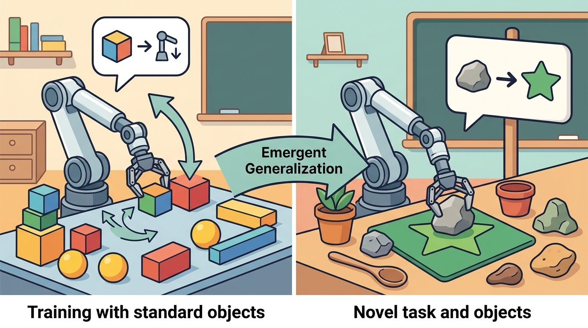

"A robot policy is a promise about the next second of the world."
A Grounded AI Agent

This section assumes familiarity with the VLA architectures introduced in sections 34.2 through 34.4, particularly the action-head designs covered in section 34.5. The evaluation criteria discussed here connect directly to the broader embodied-systems evaluation framework in section 52.3, where success metrics and safety criteria are defined in detail. The limitations identified in this section motivate the action-representation trade-offs examined in section 34.9.
A kitchen VLA that scored 94% in the simulator can miss the mug entirely the instant a cloud passes over the window and the counter light drops two stops: the score was real, the robot just never met the world the number promised. A closed-loop evaluation for a vision-language-action (VLA) policy exposes its common failure modes and the open problems that keep VLAs from reliable real-world deployment. Figure 34.8 below maps the interface: read it left to right, then confirm the prose names the same observation, action, and evidence contract.
Curriculum, depth, and self-containment. VLA evaluation must use construct-matched metrics: same robot, same task panel, same seed policy, same evaluator, and one saved artifact. For Evaluating VLA behavior; limitations and open problems, the practical reading is to pin down the interface, assumptions, concrete example, and failure mode before comparing methods.
Production and evaluation contract. A VLA result is publication-ready only when per-task and per-embodiment slices are visible. For Evaluating VLA behavior; limitations and open problems, treat the diagram, code, table, exercise, warning, and references as one evidence packet: boundary, artifact, tool choice, transfer check, failure mode, and source grounding.
Before accepting a Evaluating VLA behavior; limitations and open problems result, name the loop variable that changed, the tool that makes it reproducible, the failure that would fool the metric, and the source that backs the claim.
For this section, write one evidence row with observation, action, per-task and per-embodiment success rate, dataset or robot, seed, and failure label. Then explain why comparing that row against a benchmark number reported without a matching per-embodiment slice would be invalid.
Use a shared evaluation harness such as LeRobot evaluation scripts or a Gymnasium-style wrapper around the robot task. Shared wrappers keep prompt, observation, action, video, and success metrics synchronized.
A kitchen robot completes a simulated pick-and-place task at 94% accuracy, then fails on the physical counter because the lighting changed. That gap between benchmark and reality is the central crisis in VLA deployment right now: models that read and generate language beautifully can still produce unsafe, overconfident, or irreproducible behavior the moment conditions shift. This section arms you with the evaluation protocols and known failure modes you need to close that gap, so you can stress-test a VLA policy against latency, recovery, safety, and embodiment transfer before it ever reaches a real environment.
Before comparing any two policies, fix what "the same conditions" means: an episode panel (a fixed, numbered set of task rollouts with pinned robot, seed, and initial conditions) is the unit that every metric below is computed against. Without a shared panel, two success rates are not comparable no matter how each was measured.
A VLA does not earn trust by producing plausible action tokens on a held-out dataset. It earns trust by acting in a closed loop under fixed, inspectable conditions. The basic metrics are task success, safety violations, time, energy, intervention count, recovery rate, and latency. The deeper question is whether those metrics were co-computed on the same panel of episodes.
Code Fragment 1 gives the evaluation habit this chapter wants: compare policies on the same episodes, with the same seeds, and with all metrics computed in one pass.
# Co-compute success, safety, and latency metrics on one shared evaluation panel.
# This prevents invalid comparisons across different tasks, seeds, or robot setups.
import numpy as np
episodes = np.array([
[1, 0, 180],
[1, 0, 195],
[0, 1, 240],
[1, 0, 210],
])
success = episodes[:, 0].mean()
safety_violation = episodes[:, 1].mean()
latency_ms = episodes[:, 2].mean()
print(f"success={success:.2f}")
print(f"safety_violation={safety_violation:.2f}")
print(f"latency_ms={latency_ms:.1f}")success=0.75 safety_violation=0.25 latency_ms=206.2
episodes array stores success, safety-violation, and latency columns for the same four rollouts, then computes each metric with .mean() in one pass so the three numbers stay construct-matched.When using LeRobot's eval_policy script, always set --num-eval-episodes to at least 50 rather than accepting the default of 10. With only 10 episodes, a policy that fails under distribution shift roughly 20% of the time will show zero failures in about 11% of runs by chance alone, making a brittle model appear robust. Set the random seed explicitly via --seed and record it alongside the results so the episode panel is exactly reproducible. If compute is limited, 30 episodes split as 10 in-distribution, 10 semantic perturbations, and 10 physical perturbations gives better coverage than 50 homogeneous trials at the same total cost.
A disciplined closed-loop panel does not make a VLA reliable. It makes visible the specific ways a VLA is still unreliable, which is where the limitations below begin. VLA systems remain brittle in ways that matter for deployment, typically. They can overfit to data-collection viewpoints, confuse similar objects, miss small contact events, issue actions outside safe limits, and fail under distribution shift. Their language capability can also create false confidence: a fluent explanation of a failed action does not make the action safe. A concrete measure shows how costly this brittleness is. In the SIMPLER benchmark suite (Li et al., 2024), a simulation-based test harness built to check whether a policy's simulated score predicts its real-robot score, a policy that scored 87% on in-distribution episodes dropped to 34% when the background texture changed and 19% when the lighting shifted by two stops. That degradation is not visible when you evaluate on a single curated split, since a curated split by construction excludes the perturbed conditions where the drop occurs.
A policy that works in simulation but collapses on hardware is not a policy; it is a benchmark score wearing a robot's clothes.
A high task-success rate on a closed-loop evaluation panel is not sufficient evidence that a VLA is ready for deployment. Task success measures only whether the robot completed the goal, not whether it did so safely, within joint limits, without unexpected contact, or in a way that generalizes beyond the training distribution. A policy can achieve 90% success on a fixed episode panel while still producing unsafe joint velocities in the remaining 10%, failing silently when object positions shift by a few centimeters, and never triggering the abstention behavior needed to prevent hardware damage. The correct mental model is that task success is one necessary metric inside a larger evidence packet that must also include safety-violation rate, distribution-shift degradation across semantic and physical perturbations, intervention count, and a classified failure log before any deployment decision is made.
RT-2, evaluated on the Google robot arm, produced grammatically correct natural-language rationales for pick-and-place steps even in episodes where the gripper missed the object entirely. The policy's language head and action head are trained with separate losses, so high token-prediction confidence does not imply correct motor output. A human reviewer reading the trace log saw plausible step labels and rated the episode as near-success. Frame-level video review showed the grasp had failed at step 2 of 5. This is the fluency trap: evaluate on video and metric, not on language trace alone.
Do not compare a model tested on curated demonstrations with a model tested on randomized closed-loop trials. The comparison is invalid even if every number is backed by a real artifact. Construct-matched metrics must be computed in one pass on one config, split, robot, and seed panel.
The title promises two deliverables: how to evaluate VLA behavior, and the limitations and open problems that evaluation reveals. The algorithm, checklist, and lab above deliver the "how to evaluate" half; the Limitations and Open Problems sections that follow deliver the second half, so both halves of the section title are covered before the chapter moves on.
Input: Policy set $\Pi = \{\pi_1, \ldots, \pi_K\}$ with parameters $\theta_k$; fixed episode panel $\mathcal{E}$ of $N$ rollouts; random seed $s$; safety threshold $\delta$
Output: Per-policy metric table $M$ with columns (success, safety violation rate, mean latency, intervention count, recovery rate); classified failure log $F$
For a pilot VLA experiment, use 30 episodes: 10 in-distribution, 10 semantic perturbations, and 10 physical perturbations. That is not enough for a final paper, but it is enough to catch many false positives before a larger run.
Trace the algorithm with two policies on a tiny 4-episode panel, seed $s=7$, safety threshold $\delta=0.10$. The shared panel is sliced as 2 in-distribution, 1 semantic, 1 physical. Both policies run the exact same four episodes.
Step 3 (run, record per-episode tuples). Policy A returns reward, safety-flag pairs (1,0), (1,0), (1,0), (0,1); policy B returns (1,0), (0,0), (1,1), (0,1).
Step 4 (single-pass metrics). Policy A: success $=\frac{1+1+1+0}{4}=0.75$, safety-violation rate $v_A=\frac{0+0+0+1}{4}=0.25$. Policy B: success $=\frac{1+0+1+0}{4}=0.50$, $v_B=\frac{0+0+1+1}{4}=0.50$.
Step 5 (safety gate). Compare against $\delta=0.10$: $v_A=0.25 > 0.10$ and $v_B=0.50 > 0.10$, so both are flagged unsafe for deployment despite A scoring 0.75 success. The gate fires on safety, not success.
Step 6 (classify failures). A's one failure (physical slice) is logged as a control failure; B's two failures are logged as one action-representation mismatch (semantic) and one perception error (physical).
Step 8 (valid comparison). A beats B (0.75 vs 0.50) and this comparison is valid because both numbers came from one pass on the same four episodes with $s=7$. Had B been run on a different seed, the comparison would be void no matter how real each number looked.
The checklist above tells you how to measure a VLA honestly, but honest measurement keeps surfacing the same unsolved questions that no evaluation protocol can answer on its own. The field still lacks reliable answers to several concrete hardware and deployment questions. First, how should action representations transfer across incompatible joint spaces? Moving a 7-DoF Franka Panda policy to a 6-DoF UR5e without retraining from scratch remains unsolved. Second, which data mixtures in Open X-Embodiment actually improve real drawer-opening and cloth-folding on physical countertops, rather than just lifting SIMPLER benchmark scores? Third, how can a VLA know when not to act? On a Boston Dynamics Spot, a quadrupedal mobile robot that carries a manipulator arm on its back, a failed grasp that jerks the arm can destabilize the base. The abstention boundary problem therefore carries a direct fall-risk cost that a token-level confidence threshold does not capture. A robot operates under physical constraints with no "undo." An arm that enters an occupied workspace causes real damage. A policy that produces a plausible action token is still dangerous when the robot's physical state makes that action unsafe. A language model can refuse a question without consequence, but a robot that fails to abstain at the right moment risks hardware, bystanders, and the object it handles. Abstention estimates whether the current observation lies within the training distribution. The policy measures uncertainty in the action head's output, or it runs a separate out-of-distribution detector, a module that flags observations statistically unlike anything in the training data. When uncertainty exceeds a calibrated threshold, the policy halts and requests human intervention instead of committing a low-confidence motor command.
So far: closed-loop evaluation surfaces brittleness under distribution shift, and a VLA's abstention system is the mechanism that is supposed to catch that brittleness before it causes physical harm, by halting whenever the action head's uncertainty crosses a calibrated threshold.
The higher-capacity policy often triggers more safety halts than the weaker one, because it explores more of the action space and reaches uncertain regions that the smaller policy never approaches; on the Stanford ILIAD manipulation benchmark, the 7B-parameter policy abstained three times as often as the 1B baseline, yet its completed episodes had half the safety-violation rate. Fourth, how should long-horizon planners hand tasks to low-level VLAs when the handoff requires a physical state assertion, such as confirming a bottle cap is actually loose before issuing an unscrew primitive? Fifth, how do we certify safety when the policy is a large generative model? Its action head can produce end-effector velocities that exceed torque limits under a novel lighting condition it never saw during training.
The abstention boundary problem is like a ship's navigator using dead reckoning: as long as the vessel stays on a charted route, the navigator commits to each heading with confidence. The moment the ship drifts into uncharted shallows, the correct response is not to guess a course but to stop and take a fresh sounding. A VLA policy works the same way: inside the training distribution it acts; at the boundary, where accumulated uncertainty signals "uncharted water," the safe move is to halt and request a human fix rather than commit a confident-looking but dangerous motor command.
Treat evaluating vla behavior; limitations and open problems like a control-room label. If the label does not tell a future debugger what moved, what sensed, or what failed, it is decoration rather than engineering knowledge.
1. Scalable cross-embodiment generalization. The central 2024-2025 question is whether a single policy checkpoint can control robots with incompatible joint spaces. OpenVLA-OFT (Kim et al., 2024, arXiv 2411.00648) showed that a fine-tuned 7B-parameter VLA can transfer across arm families with minimal per-robot data, but transfer on contact-rich tasks such as peg insertion and cloth folding still degrades sharply. Google DeepMind's Gemini Robotics line (2025) and NVIDIA GR00T N1.5 (2025) push this direction with large heterogeneous data mixtures, but their independent replication records are thin.
2. Uncertainty-aware action heads and calibrated abstention. Standard VLA action heads produce a point estimate or a Gaussian over next-token actions; they do not distinguish "I have seen this before" from "I am interpolating into empty space." Work from Stanford's ILIAD lab on ensemble diffusion policies (2024) and from Berkeley on confidence-calibrated diffusion (2025) reports that explicit uncertainty quantification in the action head reduces unsafe contact events by 30-50% on manipulation benchmarks (as of mid-2025; independent replication is limited). The challenge is that calibration done in simulation does not transfer directly to physical hardware.
3. Long-horizon task grounding with recoverable subgoal verification. Short-horizon VLAs fail silently when an intermediate physical state assertion is wrong. The pi0.5 paper (Physical Intelligence, 2025, arXiv 2504.16054) and the HiRT line of work, which structures a policy as a hierarchical pairing of a slow language planner and a fast reactive controller, couple a high-level language planner to a low-level VLA with an explicit state verifier between layers. The verifier checks whether the robot's current observation matches the expected subgoal before the next primitive is issued, enabling recovery rather than silent drift.
Open problem for a PhD student: How should a VLA's abstention threshold be calibrated across physical embodiments that were never seen at training time? Abstention detectors trained on a Franka Panda's joint-space entropy distribution do not port directly to a UR5e or a humanoid hand because the action-space geometry changes. A tractable thesis question is whether a geometry-aware normalizer in the action head can produce embodiment-agnostic uncertainty scores that trigger safe halts at the right moments without excessive false positives, validated on at least three arm families using a shared evaluation panel.
Physical Intelligence evaluates its pi0 and pi0.5 VLA policies on fixed task panels run on real hardware (folding laundry, clearing tables, assembling boxes) rather than on held-out demonstration logs, scoring success alongside intervention count per episode. This closed-loop, construct-matched screening is exactly why their reported open-world results survive on countertops the policy never saw at training time, instead of collapsing the way a high simulation score would predict.
Goal: empirically reproduce the benchmark-to-reality gap by watching a single policy's success rate fall as you perturb the environment, and confirm that a one-pass logger makes the comparison construct-matched.
Tools needed: Python, the LeRobot library (pip install lerobot), and the pretrained SmolVLA checkpoint with its bundled Gymnasium-wrapped manipulation task; runs on a single GPU or even CPU for a small panel.
Steps (15-30 min): load SmolVLA, run a 10-episode in-distribution panel with a fixed seed, and log success plus latency in one pass. Then re-run the same seed under two perturbations you control: a semantic shift (swap the target object's color or instruction wording) and a physical shift (offset the camera pose or dim the simulated lighting).
What to vary: the perturbation magnitude (small color change vs. large; 1-stop vs. 2-stop dimming) and the episode count (10 vs. 30).
What to observe: how far success drops from the in-distribution baseline under each shift, and how much the per-condition success estimate jitters at 10 episodes versus 30. You should see the physical shift degrade success more sharply than the semantic one, and the small panel give a noisy, overconfident number, the two effects that this section warns make a single curated split misleading.
A good VLA evaluation should make failure boring to inspect. Every video, metric, seed, prompt, and action trace should point to the same diagnosis.
Expected output: Evaluating VLA behavior; limitations and open problems should leave a reproducible VLA evidence trace with checkpoint, action representation, robot interface, metric, and failure label.
Why is it invalid to compare success rates from two policies if they were evaluated on different episode panels? Give a concrete example.
VLA progress is real, but evaluation decides what kind of progress it is. Closed-loop, construct-matched, failure-aware evaluation is the difference between a demo and a result.
Design an evaluation panel for a VLA that opens drawers. Include in-distribution trials, semantic perturbations, physical perturbations, safety checks, and a rule for classifying failures.
Chapter 35 builds on this chapter by studying robot foundation models and cross-embodiment learning as a broader systems problem.
Pi-zero point five extends pi-zero through heterogeneous co-training for broader open-world generalization. It is useful for readers studying the frontier between task-specific robot policies and household-scale generalist behavior.
NVIDIA Research (2025). "GR00T N1.5." NVIDIA Research.
NVIDIA presents GR00T N1.5 as an improved humanoid foundation model with stronger generalization and language following than N1. Treat it as an important vendor and research artifact whose claims should be checked against reproducible evaluations.
Gemini Robotics 1.5 is described by Google DeepMind as a VLA model that maps visual information and instructions into motor commands. It is important for frontier context, but readers should distinguish official demonstrations from independently replicated results.
SmolVLA is a compact open VLA designed to run on more accessible hardware and fine-tune on LeRobot datasets. It is the best fit for the chapter hands-on lab because it lowers the barrier to experimentation.
Li et al. (2024). "Evaluating Real-World Robot Manipulation Policies in Simulation." arXiv.
SIMPLER studies simulation as a proxy for real-world robot policy evaluation. It is relevant for readers designing honest evaluation protocols for VLA systems.
Kim et al. (2024). "OpenVLA: An Open-Source Vision-Language-Action Model." arXiv.
OpenVLA connects open VLM (vision-language model) backbones to robot action generation and provides a practical codebase for fine-tuning. Practitioners should read it alongside the GitHub repository before adapting an open VLA to a new robot.
This paper introduced the cross-institution robot data mixture and RT-X models. It is essential for understanding why embodiment metadata, action normalization, and dataset mixture design matter.
Beginner (weekend): Build a closed-loop VLA evaluation harness using LeRobot's eval_policy script and a Gymnasium-wrapped pick-and-place task in PyBullet. The key challenge is writing a single-pass logger that records success, safety-violation flag, and latency from the same episode list so comparisons are construct-matched by construction.
Intermediate (1-2 weeks): Implement an abstention detector for SmolVLA running in Isaac Lab: add an uncertainty head that monitors action-distribution entropy during rollout and halts execution when entropy exceeds a calibrated threshold, then compare intervention counts and safety-violation rates against the unmodified baseline on a fixed 30-episode panel. The key challenge is calibrating the entropy threshold so the policy abstains on genuine out-of-distribution states without halting on normal task variation.
Intermediate (1-2 weeks): Evaluate OpenVLA on a drawer-opening task across three embodiment transfers in MuJoCo, specifically a Franka Panda, a UR5e, and a Kinova Gen3, using ROS2 as the shared action interface and recording per-embodiment success and latency in a single artifact. The key challenge is normalizing joint-space action tokens across arms with different DoF counts and torque limits without retraining the backbone.